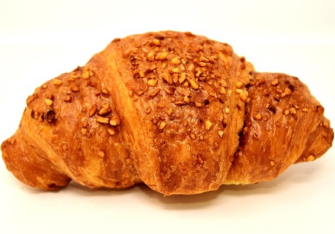

Customer Voices

Favourite of all time: DC (Double Chocolate Croissant)
"Andra's Treat Trove's double chocolate croissant is simply unbeatable! As a café owner, I've sampled countless pastries, but this one stands out. The croissant is perfectly flaky and buttery, with a rich, decadent chocolate filling that leaves customers coming back for more. Our patrons rave about it, and it's become a bestseller at our café."
-Chiamaka Igwe, Owner of Cafe Bliss
Chocolate Eclair
"Their chocolate eclairs are to die for! Rich, creamy filling with a crisp shell - a true delight."
-Nonso Okafor, Owner of Sugar and Spice bakery

Trimasu
"The tiramisu here is simply divine! Layers of coffee-soaked ladyfingers, creamy mascarpone, and a dusting of cocoa powder create a perfect balance of flavors. It's the best tiramisu I've ever had!"
- Nnenna Okonkwo, Owner of Pastry Paradise Cafe

Carrot Cake
"The carrot cake is outstanding! Moist, spiced layers filled with grated carrots and topped with a luscious cream cheese frosting. The perfect balance of sweetness and spice makes it an irresistible treat."

Fruit Tarts
"I love the fruit tarts! Fresh, vibrant fruits on a buttery crust - so refreshing and delicious."
- Emeka Okoye, Owner of Sunrise Dinner

Citrus Flavoured Muffins
"Their citrus muffins are moist and bursting with fresh blend of citrus fruits, a delightful breakfast option."
- Chianugom Ikenna, Owner of Sweet Symphony Event Planning.
Cinnamon Rolls
"The cinnamon rolls are incredibly moist and packed with cinnamon goodness. A must-try!"
- Adaugo Mmachi, Owner of The Breakfast Nook

"I adore their almond croissants. The almond paste inside is so flavorful and pairs perfectly with the croissant."
- Chinora Ifeanyi, Owner of Coffee and Crumbs Cafe
Almond Croissants
"I adore their almond croissants. The almond paste inside is so flavorful and pairs perfectly with the croissant."
- Chinora Ifeanyi, Owner of Coffee and Crumbs Cafe